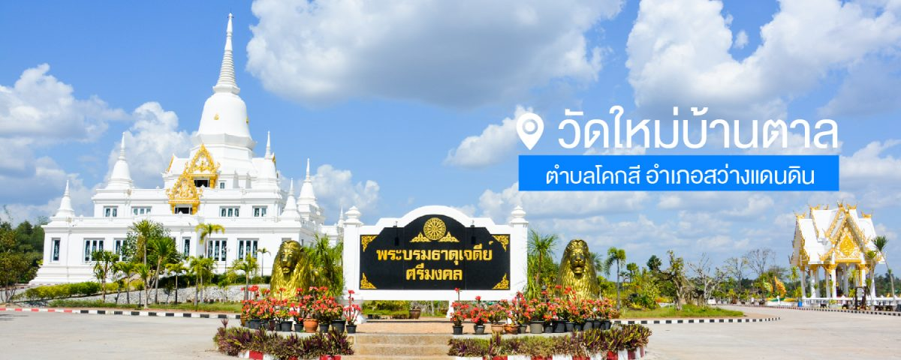
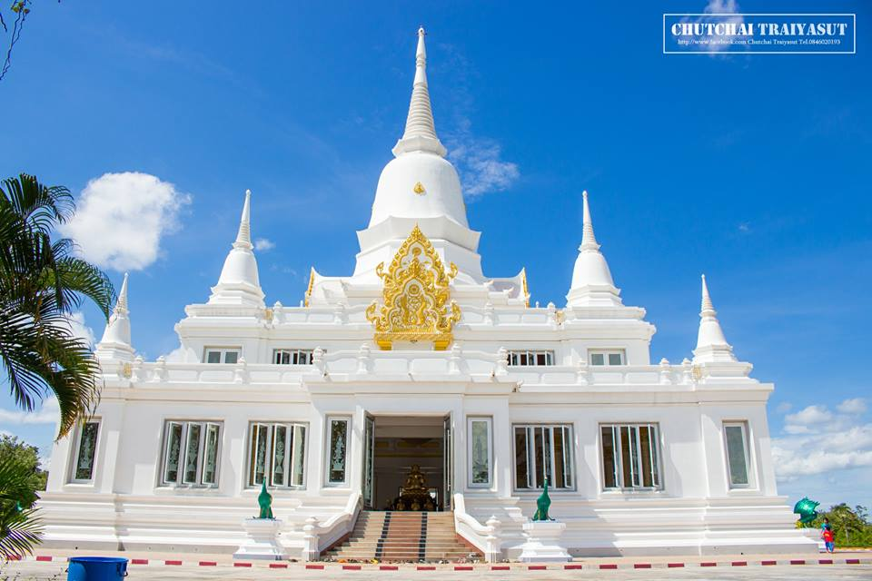
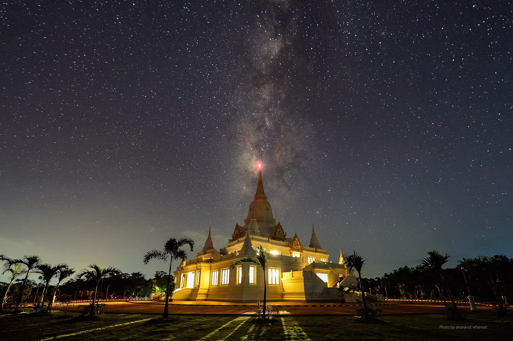

HELLO WELCOME
วัดใหม่บ้านตาล สถานที่ท่องเที่ยวแห่งใหม่

วัดใหม่บ้านตาล ตำบลโคกสี อำเภอสว่างแดนดิน จังหวัดสกลนคร พระบรมธาตุเจดีย์นี้ หลวงปู่คำบ่อ ฐิตปัญโญ ได้นำชาวบ้านตาลและชาวบ้านใกล้เคียง คณะญานุศิตย์และพุทธศาสนิกชน ที่มีความศรัทธาในพระพุทธศาสนา ร่วมกันสร้างขึ้นเมื่อวันอังคารที่ ๑๕ เดือนพฤษภาคม พ.ศ.๒๕๕๕ แรม ๑๐ ค่ำเดือน ๖ ปีมะโรง และแล้วเสร็จเมื่อวันศุกร์ที่ ๑๑ พฤศจิกายน พ.ศ. ๒๕๕๙ ขึ้น ๑๒ ค่ำ เดือน ๑๒ ปีวอก รวมระยะเวลาในการก่อสร้าง ๔ ปี ๕ เดือน ๒๗ วัน เป็นพระบรมธาตุ ๙ ยอด (โลกสุตรธรรม ๙) ฐานสี่เหลี่ยมทรงระฆังคว่ำขนาดกว้าง ๓๖.๕๐ × ยาว ๓๙.๕๐ × สูง ๔๑.๙๑ เมตร ประดิษฐาน ณ วัดบ้านตาล ตำบโคกสี อำเภอสว่างแดนดิน จังหวัดสกลนคร แบ่งเป็น ๓ ชั้น
ชั้นบนสุด" มีเจดีย์ประธานขนาดกว้าง ๑๔.๙๐ ×ยาว ๑๔.๙๐ × สูง ๒๕.๙๐ เมตร และเจดีย์บริวารทั้ง ๔ ทิศ ใต้ฐานเจดีย์ประธานเป็นห้องมณฑปจตุรมุข ภายในประดิษฐานพระบรมสารีริกธาตุบนบุษบกไม้สักทองและเป็นพิธภัณฑ์

ชั้นกลาง" มีเจดีย์บริวาร ๔ ทิศ ภายในเป็นห้องมีทางเดินโดยรอบ

ชั้นล่าง" เป็นที่ประดิษฐานพระประธานสมเด็จพระโลกนาถศาสดา (พระศาสดาผู้เป็นที่พึ่งของสัตว์โลก) หน้าตักกว้าง ๖๐ นิ้ว สูง ๑๓๒ นิ้ว ปางสมาธิทรงเครื่องแบบกษัตริย์ประดับด้วยทอง พลอย และคริสตัล ที่ฐานพระประธานโดยมีรูปเหมือนครูบาอาจารย์ เช่น หลวงปู่เสาร์ กันตสีโล หลวงปู่มั่น ภูริทัตโต เป็นต้น และใช้เป็นสถานที่ปฎบัติธรรม
“ประวัติหลวงปู่คำบ่อ ฐิตปัญโญ”
นามเดิม คำบ่อ พวงสี ถือกำเนิดเมื่อวันพุทธที่ ๑๑ เดือนพฤษจิกายน พ.ศ. ๒๔๗๔ ขึ้น ๒ ค่ำ เดือน ๑๒ ปีมะแม ที่บ้านตาล ตำบลโคกสี อำเภอสว่างแดนดิน จังหวัดสกลนคร มีพี่น้องรวม ๗ คนบิดาชื่อ ทอง พวงสี (ต่อมาได้บวชเป็นพระและจำพรรษาที่วัดบ้านตาลจนกระทั่งมรณะภาพ) มารดาชื่อ ภู่ พวงสี อุปสมบทเมื่อวันจันทร์ที่ ๒๑ เดือน เมษายน พ.ศ.๒๔๙๕ แรม ๑๒ ค่ำ เดือน ๕ ปีมะโรง ขณะอายุได้ ๒๐ ปี ๕ เดือน ๑๐ วัน ณ วัดเจริญราษฎร์บำรุง ได้ธุดงติดตามครูบาอาจารย์ อาทิ หลวงปุ่พรม จิรปุญโญ หลวงปู่ขาว อนาลโย หลวงปุ่ฝั้น อาจาโร หลวงปูสิม พุทธาจาโร หลวงปู่แหวน สุจิณโณ หลวงปุ่ตื้อ อจลธัมโม ท่านพ่อสี ธัมมธโร และหลวงปู่เทสก์ เทสรังสี ฯลฯ ไปทั่วทุกภูมิภาคของประเทศไทย ส่วนใหญ่อยู่ในภาคเหนือ รวมระยะเวลา ๒๒ ปี
ด้านสารณะประโยชน์ หลวงปู่ช่วยดูแลการก่อสร้างอุโบสถที่วัดสันติธรรม จ.เชียงใหม่ จนแล้วเสร็จ และมาเริ่มสร้างวัดบ้านตาล เมื่อปี พ.ศ. ๒๕๑๗ จนถึงปัจจุบันวัดบ้านตาลมีเนื้อที่ ๒๕๕ ไร่ ทั้งเป็นกำลังสำคัญร่วมกับหลวงปู่วัน อุตตโม ในการหาทุนทรัพย์เพื่อสร้างโรงพยาบาลสว่างแดนดิน ซึ่งต่อมาคือ โรงพยาบาลสมเด็จพระยุพราชสว่างแดนดิน เมื่อครั้งแรกเริ่มของการก่อสร้าง ฯลฯ ท่านดำรงตนอยู่ในพระธรรมวินัยอย่างเคร่งครัด พร้อมทั้งได้แนะนำและสนับสนุนพระภิษุสามเณรให้ศึกษาทั้งด้านปริยัติและปฏิบัติ ตลอดจนสั่งสอนศิตยานุศิตย์และผู้คนทั้งหลายให้ประพฤติตนอยู่ในศิลธรรมตามคำสอนขององค์สมเด็จพระสัมมาสัมพุทธเจ้า และย้ำสอนเสมอถึงหลักความจริงว่า “คนเราเกิดมาในโลกนี้ไม่มีใครผ่านพ้นความแก่ ความเจ็บ และความตายไปได้ ชั่วดีมีจน เป็นคนชนิดไหน ก็ไม่พ้นสัจธรรมตัวนี้ไปได้